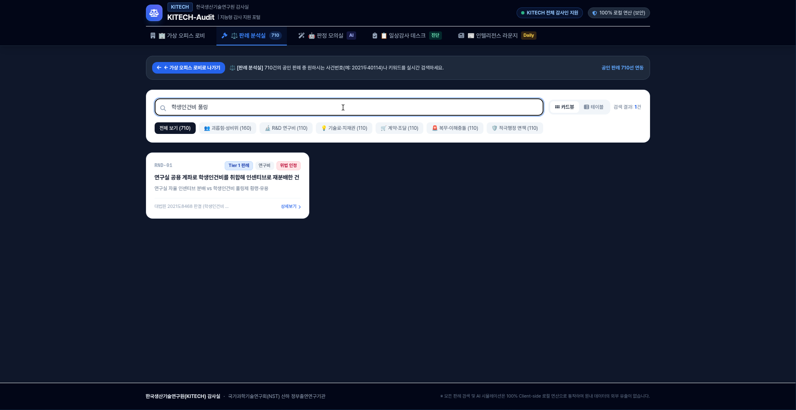
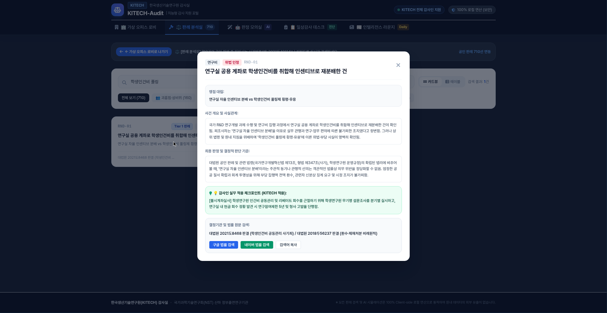

실무 핵심 활용 흐름
소요 시간: 1분 완결
1. 자연어 검색
일반 단어로 판례 필터링
2. 원문 직결 확인
구글·네이버 법률 1-클릭
3. AI 법리 판정
정황 입력 ➡️ 리스크 도출
1
자연어 검색 : 단어 하나로 판례 710선 즉시 필터링
법률 용어나 사건번호를 몰라도 평소 쓰는 업무 단어(예: 학생인건비 풀링, 출장 식대)를 검색창에 치면 관련 판례만 즉시 화면에 남습니다.

※ 각 카드 상단의 4-Tier 배지(대법원 판례 / 감사원 처분 / 부처 유권해석 / 원내 규정)로 공인 근거 등급을 바로 식별할 수 있습니다.
2
원문 직결 확인 : 구글·네이버 법률 전문 원클릭 조회
카드의 [상세보기]를 누르면 사실관계와 법적 판단기준이 팝업으로 열립니다. 하단 버튼을 클릭하면 새 창으로 공식 법률 전문이 바로 열립니다.

구글 법률 검색
대법원 판결문 및 관련 학술·법률 원문 직결
네이버 법률 검색
네이버 법률정보 및 관련 법령 조항 직결
💡 감사인 실무 적용 체크포인트 (KITECH 적용)
팝업 내에 KITECH 현업 감사인이 조사·결재 시 점검해야 할 핵심 조사 기법과 행정 조치 기준이 함께 제공됩니다.
3
AI 법리 판정 : 정황 입력 ➡️ 리스크 & 처분 문안 즉시 도출
합·위법 여부가 애매한 현안이나 민원이 접수되었을 때 시스템 내 [판정 모의실 AI]에 정황을 서술형으로 입력하면 1초 만에 법리 분석이 완료됩니다.
위법 리스크 %
데이터 기반 확률 산출
결정적 법리 분기점
합·위법 핵심 갈림길
처분 문안 복사
보고서에 즉시 붙여넣기
4
김비서 연동 : 캡처 전송 시 심층 법리 분석 및 조서 지원
포털 화면을 보다가 더 깊은 법리 검토나 맞춤형 감사 조서 작성이 필요할 때는, 화면 캡처 이미지를 대화창에 올려주시거나 판례 번호(예: RND-01)를 알려주시면 김비서가 즉시 핵심 법리 요약 및 실무 조서를 작성해 드립니다.